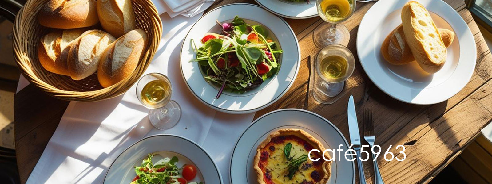

café5963 ブランジェリー・カフェ

HOME
MENU
ACCESS
CONTACT
café5963 メニュー
Entrées / Starters前菜
Poissons / Seafoodお魚料理
Viandes / Meatお肉料理
Desserts / デザート
Entrées / Starters前菜
Saumon mariné / Marinated salmon ¥1,800
サーモンマリネ
Jambon de Parme / Assorted of Parma ham ¥1,900
パルマ産生ハム
Terrine de foie gras / Terrine of foie gras ¥2,700
フォアグラのテリーヌ
Moules Marinières(Japon) 500g / Mussels "mariniere" ¥1,600
ムール貝の白ワイン蒸し
Escargots à la Bourguignonne / Burgundy-style escargots ¥1,900 エスカルゴブルゴーニュ風
Poissons / Seafoodお魚料理
Sole meunière / Sauteed sole meuniere ¥2,900
舌平目のムニエル
St-Jacques grillée / Grilled scallops ¥2,850
ホタテ貝の炭火焼
Poisson du jour / Today's fish 時価
本日の鮮魚
Viandes / Meatお肉料理
Confit de canard / Preserved duck ¥2,470
鴨のコンフィ
Choucroute / Sauerkraut ¥2,600
シュークルート
Carrés d’agneau rôti ou grillés / Roasted or grilled loin of lamb ¥2,940
仔羊のローストまたはグリル
Desserts / デザート
Crème d’angers ¥850
クレームダンジェ
Salade de fruits / Fruits salad ¥850
フルーツサラダ
Crème Amélie / Creme brulée ¥650
クレームアメリ
Mousse au chocolat / Chocolate mousse ¥850
ムースオショコラ